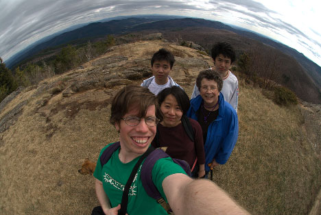
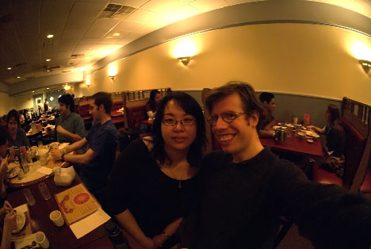

DiaryNOTE: If you don't happen to be me, this will be excruciatingly dull to read.11/06/06 Nothing is purer than intense beauty-ee So! Hi diary! Out of the habit again. I went to China! Okaybye! 4/30/06Are you addicted to the silence? So Tsotsi is thoroughly devastating, isn't it? 4/27/06There will come a train Jesus Christ, "From Macaulay Station" on the new Lucksmiths E.P. is a good song. Okay, haven't update the website in a while. I mean, I've gone longer, but I had a bit of a good run down there. Busy again, but it's abating briefly, although for mostly annoying reasons (I'm waiting for the machine shop to finish some stuff, so it just means that I'm going to have to work later further on to make up for it). Anyway, yeah, busy, but not all that bad. I went hiking in the Adirondacks a couple of weeks ago. This is us on the top of the mountain:  [From front to back: Me, Hua, Annie (Hua's landlady), Minfeng, Jingle. The dog is Sadie] I had to give a talk on Wednesday to my research group. We usually talk about optics/THz papers, but I talked about a fish instead. 04/09/06You curse the tides that left you for dead I finished/submitted my abstract for the conference in Shanghai! So, I guess I'm actually going! I have to arrange tickets and a visa and all sorts of stuff, but that should be okay. I was thinking of taking a train when I go from Shanghai to Beijing, but Hua strongly advised against it, deferring the description of why until we weren't having dinner, but I forgot to ask later. Now I'm pretty curious. Not much else going on - no shows this weekend (boo...) but there is one on Friday (yay!) - and it's the Gazetteers! 4/04/06I ate every piece of paper they gave me Wow, three updates in two weeks, what is up with me? So! I found out today that I get to go to a conference in Shanghai in September! And after the conference, I'm going to go to Beijing for a week! I can't believe how awesome that is. Of course, there are many months in between, but it gives me something to look forward to, especially since every experiment I've done this week didn't work. Such is life. Still, China! Rock! I still have to write my abstract for the conference, but it shouldn't be too hard once I figure out what I'm going to write about. 4/02/06But I thought she said, "maple leaves" I went to another show this weekend! This one was in Boston, which gave me a good excuse to see Teresa. Here's some photographic evidence (as well as photographic evidence of my crazy grin):  The show was a lot of fun! There was a bit of confusion about what was actually going to be there (we weren't sure if it was going to be people playing music or giant, foam-rubber monsters beating each other up - really!), but it turned out to be pretty rad. I really like the pictures that I've been able to take with the new camera, too! Yay digital. There are quite a few shows coming up in the future, too, which is pretty amazing considering the multi-month drought I had after Popfest... 3/27/06Supreme nothing, oh yeah Oh, hello inter-net. So I neglected you for eight months, you are used to this. Nothing really new, just busy, don't worry. I went to a show this weekend after not going to any shows since Popfest in November! I think that's the longest drought I've ever had! It sucked, too, since I got a new camera that I wanted to use. But, finally, I got to try it, and it worked pretty well! I'm still spending way too much time in the lab/my office at school. That's boring to talk about, so I won't. I think this is why I don't write in my diary very often. I read The Dream Life of Sukhanov by Olga Grushin a few weeks back, and I think it's one of the best things I've ever read; it's simultaneously inspiring and devastanting, and the way you (or at least I) come to both sympathize with and despise Sukhanov is pretty astounding. Otherwise, yeah, not much going on - I have hopes, though! 7/10/05Lights out, everybody hide Zak told me to update my diary more often so he has something to read while he's at work. So that's what I'm doing! C'mon, though, it's only been three months since I last wrote in here... I suppose the biggest development is that I'm going to Italy in eight days. It's for a conference, and most of the time I'll be in Sicily. The place where it's being held is an ancient monastary on top of a mountain in Erice that has since turned into a university. I think it'll be pretty nice, or at least if I don't enjoy it there's probably something wrong with me. After the conference, I'm going to Rome for a couple of days, since it would be silly to only go to the airport there and not actually visit the city. I'm excited. I went to an Ida show last night! I can't believe I hadn't been to one of their shows in five years. I mean, I've gone to lots of side-project things (mostly K.), but five years. GEEZ. Ida was good, but the whole experience was a bit of a mess. See, it was listed as "Erin McKeown and Ida" and I assumed that Ida was the headliner and it would be like all the other Ida shows I'd been to and I could just drive out to Northampton and give them money and we're all set. The thing was that Eric McKeown was the headliner, which meant that it was sold out before I got there. Turns out that the place was my old nemesis: the club with tables and chairs where people eat dinner while watching a show. I ended up going in (for $18...) and standing in the back, mostly in the way of the waiters and waitresses. At least I got to comisserate with a pair of other Ida fans who also had no idea who Eric McKeown was. Anyway, it was still good to see Ida again. I'll have pictures up once the weather cools down enough that I can actually process my film (I have a five show or so backlog now for this reason). Also, I got a haircut yesterday, and now my hair is short! I'm still adjusting to how small my head looks now, but I'll get used to it. I'd put up a picture of it or something, but that's really boring. Haha, I took the old entries off line! Take that, awkward, publicly-accessible record of my misguided youth! |